01
Content & Publishing Operations
Digital publishing, editorial QA, SEO, WordPress, newsletters, social media and high-volume content workflows.
I work across digital publishing, content operations, multimedia production and on-camera communication in English and Malayalam. I also explore how AI, automation and technology can simplify workflows, solve practical problems and turn ideas into useful systems.
Digital publishing, editorial QA, SEO, WordPress, newsletters, social media and high-volume content workflows.
English and Malayalam presenting, interviews, explainers, scripting, voice-over and multimedia storytelling.
Concept development, storyboarding, directing, shoot coordination, client communication and video production.
AI-assisted workflows, automation, tool testing, structured troubleshooting and practical product experiments.
University First Rank with 87%, combining academic excellence with practical training in journalism, audiovisual production and media.
Postgraduate study across politics, international relations, public policy and governance, with independent research.
Managed 1,700+ pieces end-to-end from news sourcing and verification to editing, SEO and digital publishing across energy, healthcare, pharma and finance.
Produced high-volume multimedia content from concept and scripting to on-camera presentation, shoot coordination and final production across multiple client sectors.
Deliver independent English and Malayalam multimedia projects, handling projects from concept and scripting through presentation, shooting, editing and final delivery.
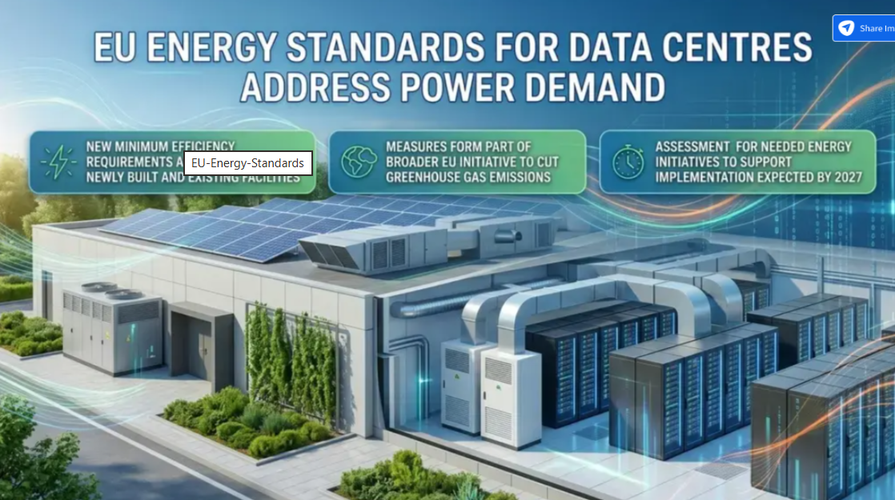
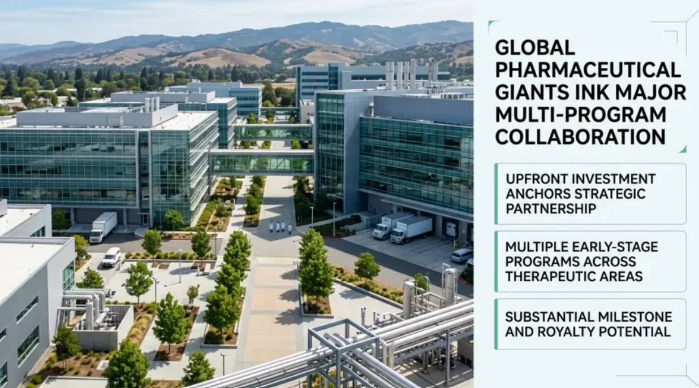
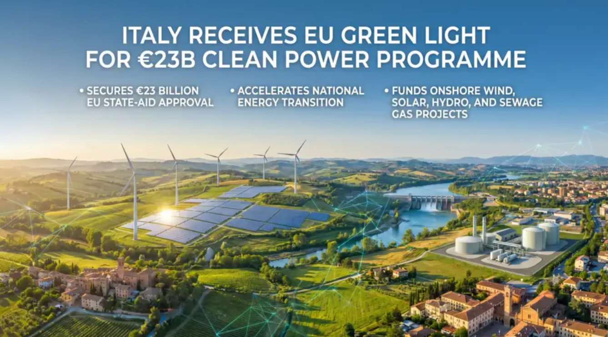
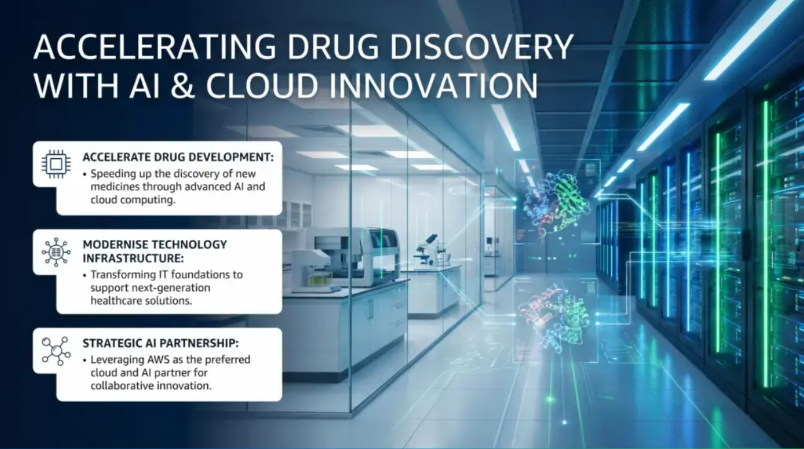
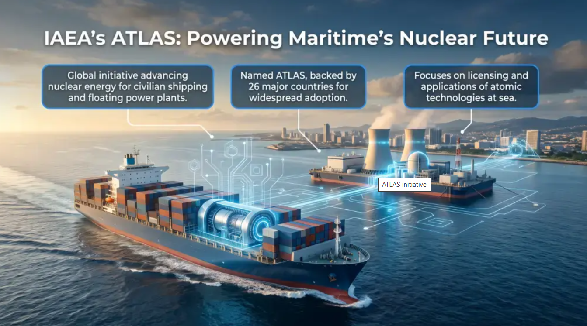
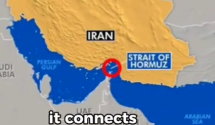
▶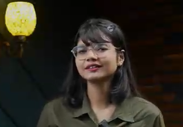
▶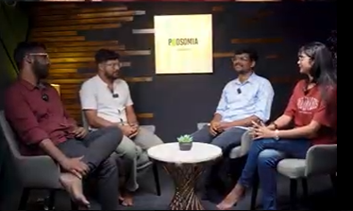
▶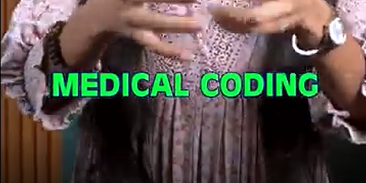
▶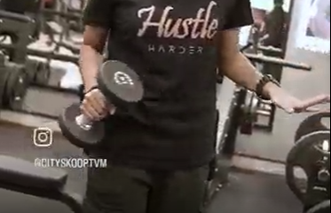
▶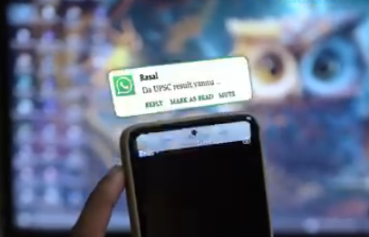
▶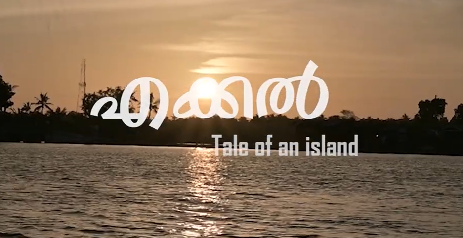
▶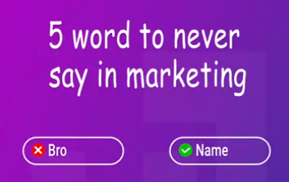
▶My technical work is practical and exploratory. I use AI to prototype ideas, test workflows and solve problems while continuing to build my own understanding of the underlying tools and code.
A self-initiated tool designed to reduce repetitive CV formatting and make tailored versions easier to create. I defined features, tested implementations, debugged issues and iterated with AI assistance.
A beginner Python and Streamlit project built around a real personal need: creating a simple system for tasks, consistency and experimentation while learning to code.
A personal web project covering account security, payment risk and identity verification, with hands-on exposure to information architecture, structured content and GitHub Pages deployment.
Professional experimentation with reusable prompts, model comparison, verification stages, human review, tool testing, AI-search visibility and workflow troubleshooting.
News Sourcing · Verification · Editing · WordPress · SEO · HTML · Newsletters · Social Media · AEO/GEO
On-Camera Presentation · Video Production · Scripting · Storyboarding · Directing · Interviews · Voice-over · Video Editing
AI-Assisted Workflows · Automation · Prompting · Model Comparison · AI Research & Experimentation · Human-in-the-loop QA
Editorial QA · Shoot Coordination · Client Communication · Onboarding · Workflow Documentation · Cross-functional Coordination
HTML · Python · JavaScript · CSS · SQL Foundations · GitHub Pages · Streamlit
WordPress · Canva · CapCut · DaVinci Resolve · Adobe Premiere Pro · Feedly · Zapier · ChatGPT · Claude · Gemini · Grok · Perplexity
Work is only one part of me. I like experimenting with visual ideas, performing, learning new things and making things simply because I want to see if I can.
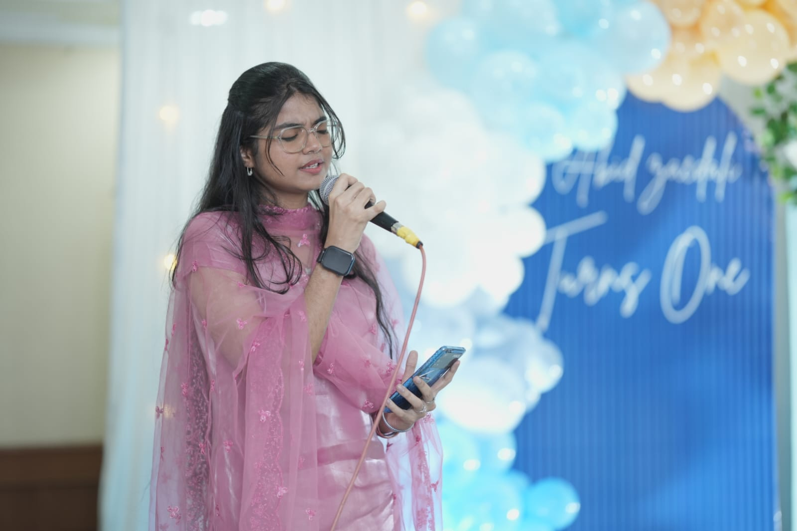
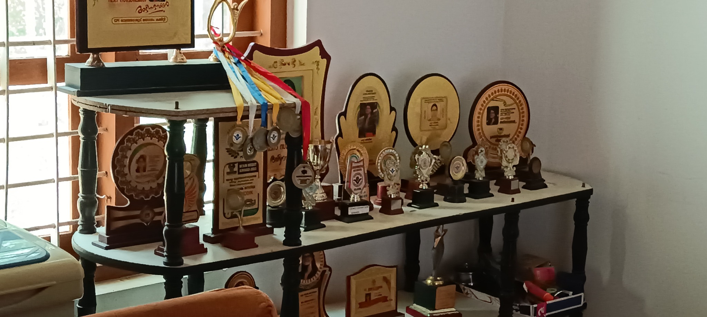
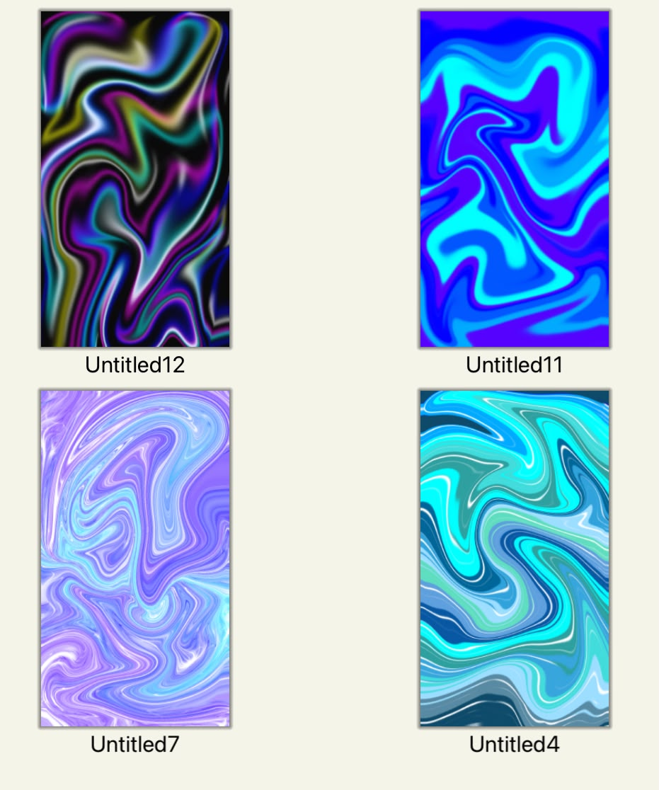
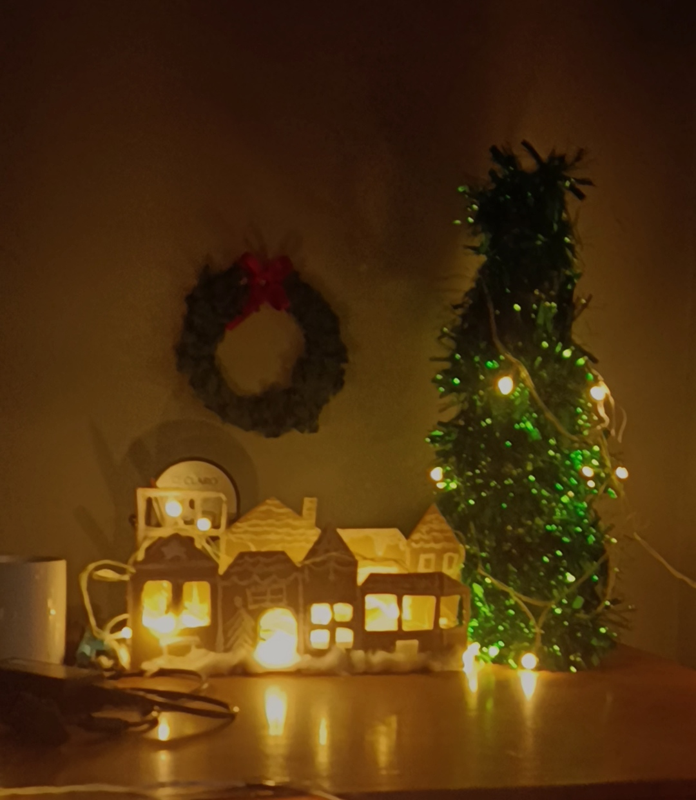
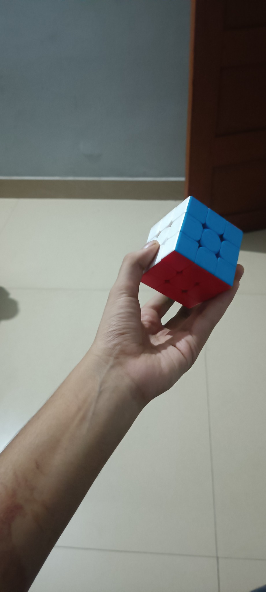
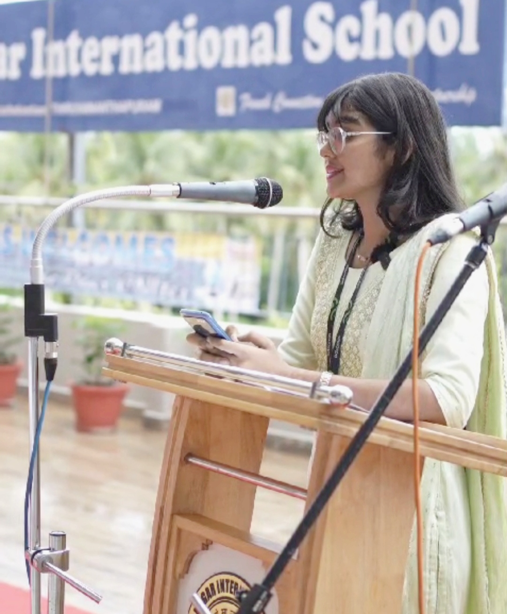
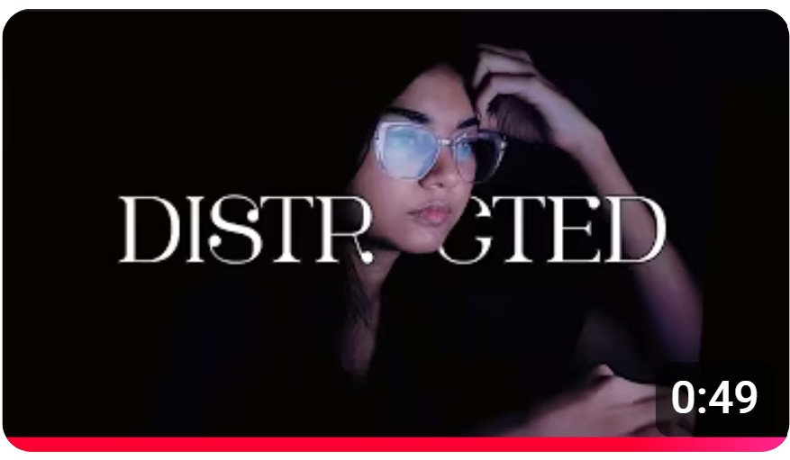
DistractedBloom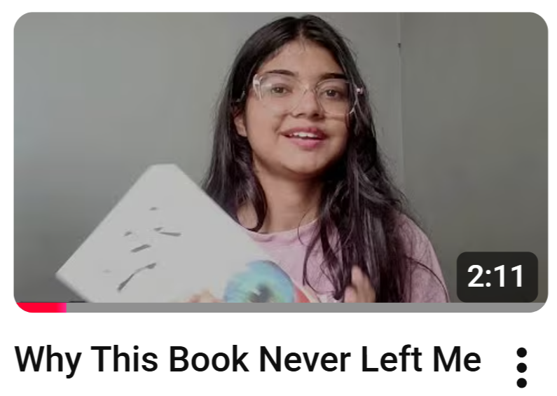
Why This Book Never Left Me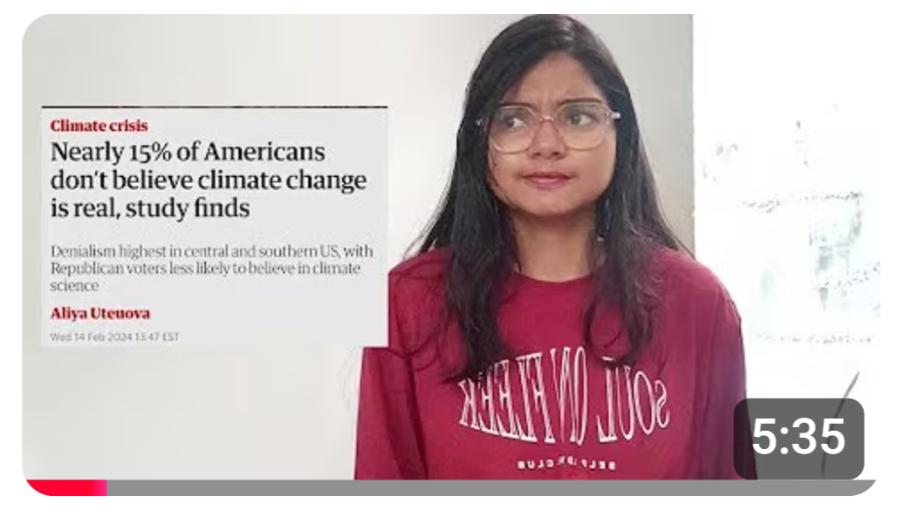
Climate Change ExplainerOpen to opportunities across content operations, digital media, communications, publishing, production and AI-enabled workflows.